KAREN EL ASMAR
DESIGN IN SAFARIS
Empathy Machine
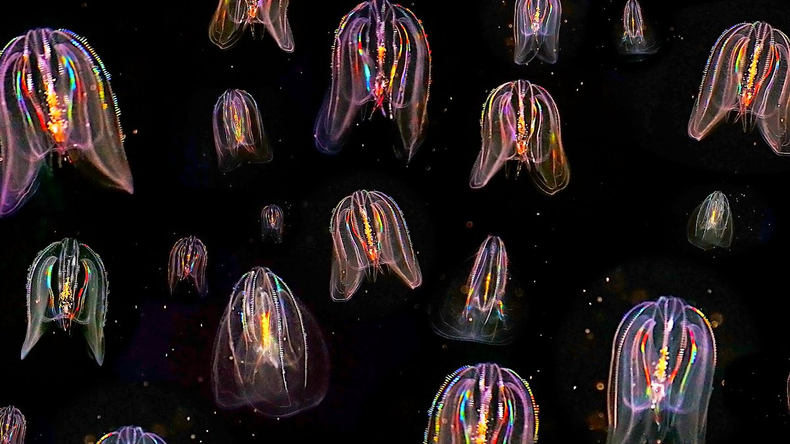
An empathy machine is a prototype that allows a human to experience animal senses/locomotion or other animal processes.
Motivation
The animal I chose to create an empathy machine for is the comb jellies. What sparked my interest in this animal is an article I read about sending jellyfish to space to study what would happen when a living thing is reared in microgravity.
I was so curious to see how, why and to what extent does sending jellyfish to space relate to human beings in order to, hopefully, be able to create an experience to empathize with these animals.
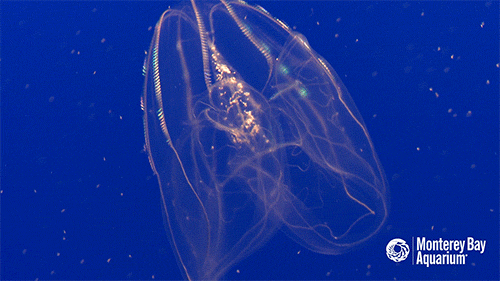
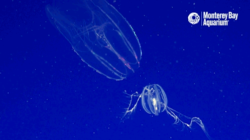
Why were jellyfish sent to space?
About Jellyfish by RR Helm at Deep Sea News:
“When a jelly grows, it forms calcium sulfate crystals at the margin of its bell. These crystals are surrounded by a little cell pocket, coated in specialized hairs, and these pockets are equally spaced around the bell. When jellies turn, the crystals roll down with gravity to the bottom of the pocket, moving the cell hairs, which in turn send signals to neurons. In this way, jellies are able to sense up and down. All they need is gravity.”
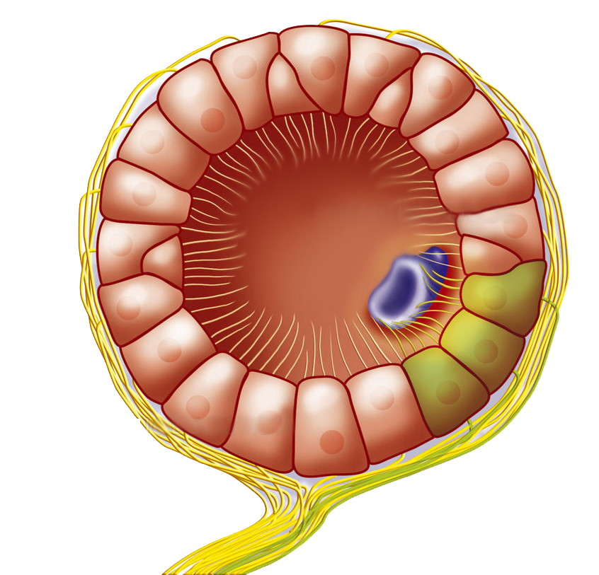
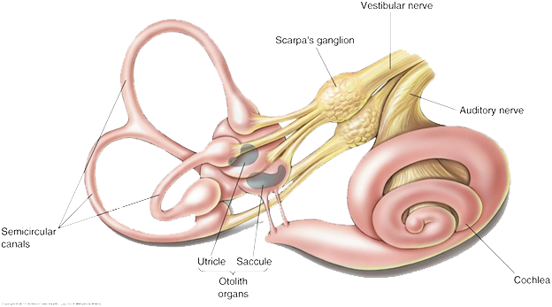
What does this have to do with humans?
Many of jellyfish structures resemble a simplified version of that of humans. Humans, just like jellyfish, have “gravity sensors” that help us orient ourselves. This vestibular system, located in our inner ears, is not so different than that of the jellyfish. For this, sending jellyfish to space, letting them develop and then observing how they behave back on Earth offers a good example of how human born in outer space might respond to life back on Earth.
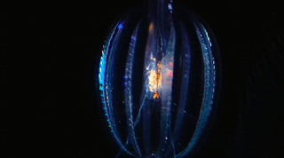
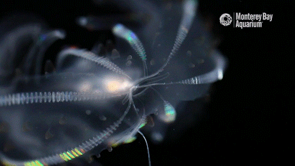
Findings
After jellyfish developed in outer-space, in a process that takes only five days, they were returned back to Earth. These jellyfish responded very poorly to gravity and had trouble orienting themselves and straightening up themselves. These results show that if humans give birth in outer space, their children will have too much trouble adapting to life on Earth.
Hence, in the middle of all this hype to colonize outerspace, I think now is a perfect time to emphathize with these animals, learn from them and understand how similar we are to them.
 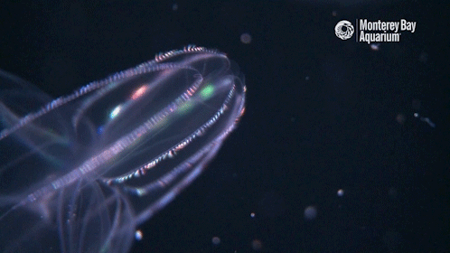
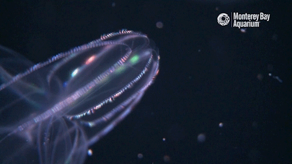
About Comb Jellies (Ctenophores) - Unique Features
Historically
- Similar to jellyfish
- Some of the oldest creatures living on planet earth
- Some of the first multi-celled organisms
Anatomy
- Very simple creatures with few specialized organs
- Evolved without eyes and arms
- Can tell direction without having eyes
- No central nervous system
- No “brains”, network of neurons: nerve net that allows them to sense their environments
Sensory Organs
- Part of Nerve Net: Specialized balance receptors called statocysts that allow them to orient themselves and stay upright among the ocean’s currents
- Rely on their statocysts to better coordinate their cilia to reel in prey
Appearance
- Eight rows of tiny comblike plates used to move through water
- Are gelatinous animals, colorless and transparent
- Beating combs act like a prism - decomposing and scattering light into its components, generating rainbow-like colors
- Able to produce light — bioluminescence
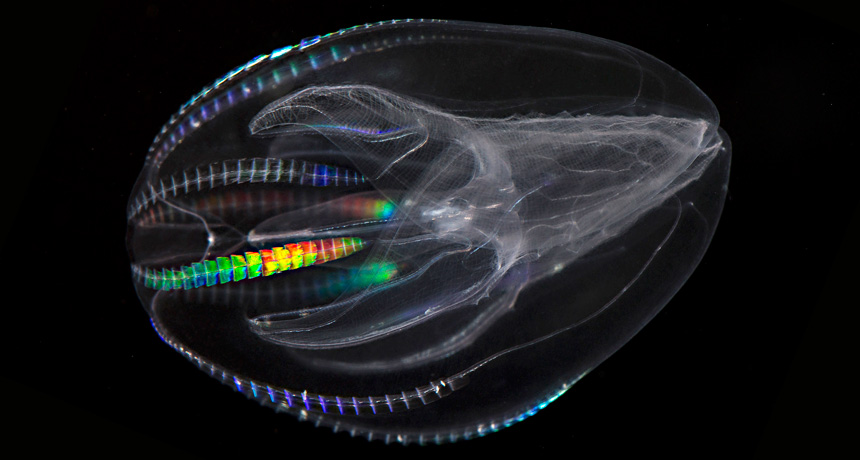
Concept
The questions I would like to address in my design and the experience I aim to create is based on the following:
- How can I make someone feel gravity and know what an upright position is, when we take these things for granted?
- How can I generate a similar emotion a comb jelly experiences, a feeling of unbalance and a need to always regain balance and adapt, in humans?
For this, I decided to create a device that emphasizes human's body tilting. The aim is for the wearer to wear this device for a certain period of time and realize how often their body tilts and how they have to readapt. When the body tilts, they hear a buzzer sound and lights light up indicating that they have lost balance.
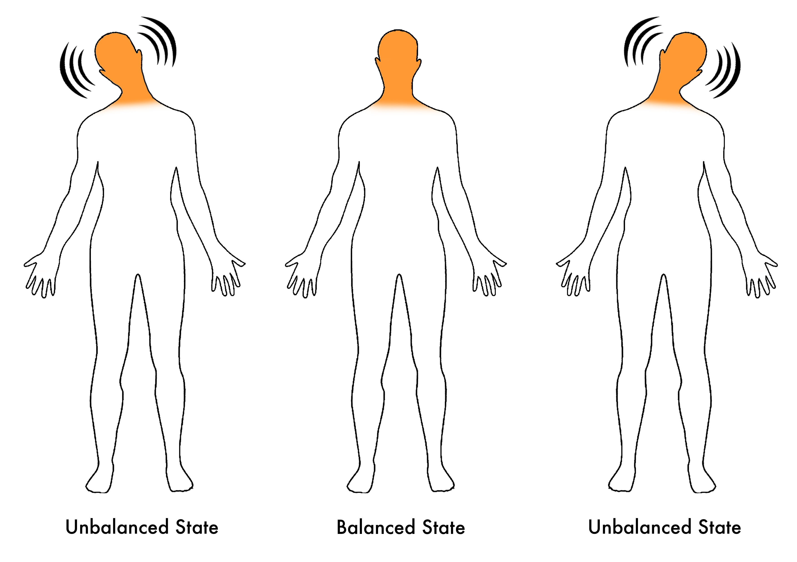
Process
To do my empathy machine, I first focused on the human head as the main subject of my design as I thought it is the main balance detector in human bodies. However, later, I mapped a human body to that of comb jelly and decided to include the upper body as well as part of the design as the comb jellies body is not really divided as ours.
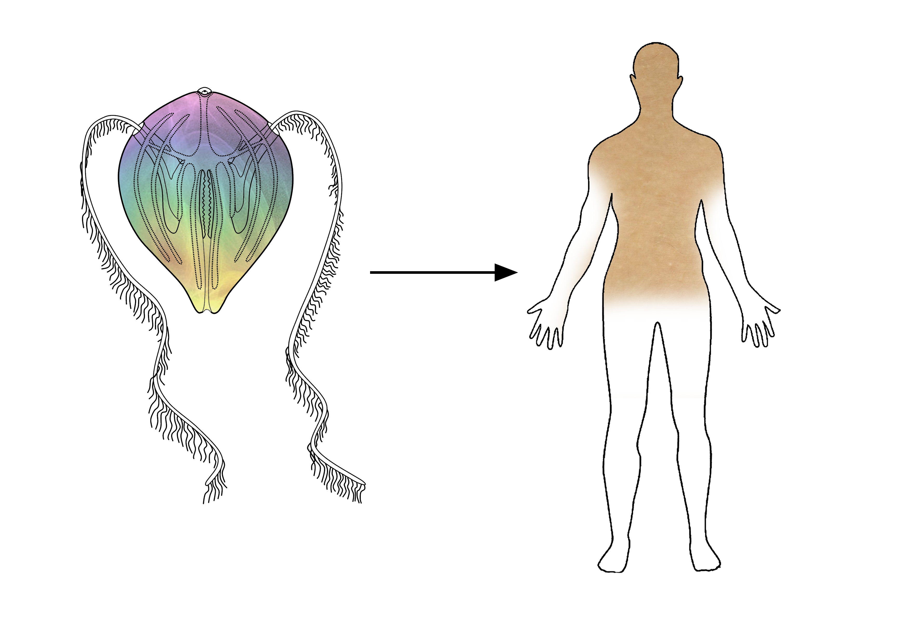
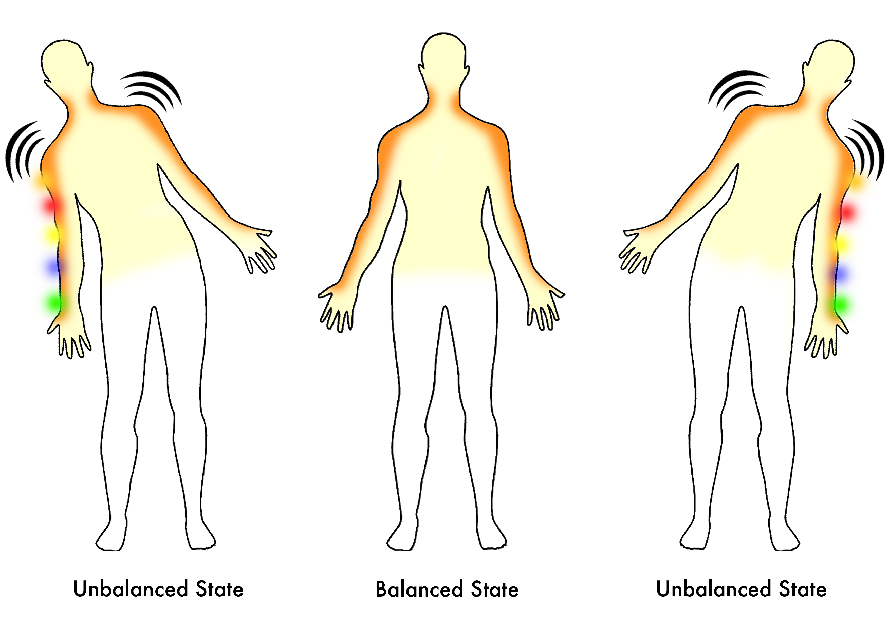
Design
The design is composed of a tilt sensor, a buzzer and some LED lights. The tilt sensor and buzzer are to be placed on the back of a person’s neck and the LED lights fall onto a person’s arms and act similarly to tentacles of the comb jelly.
Materiality
As for the material of the design, I chose for my prototype a sort of translucent and not so opaque material that can reflect the texture and color of a jellyfish.
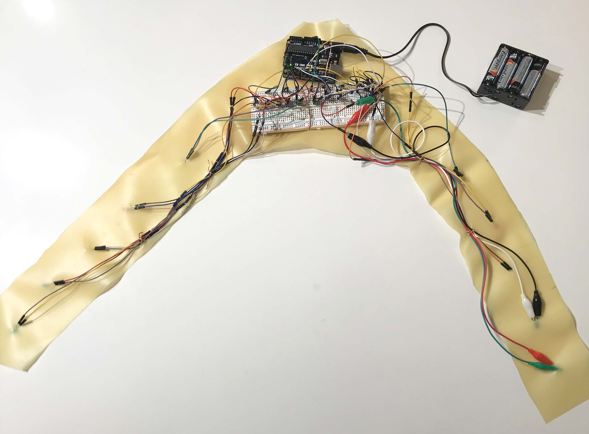
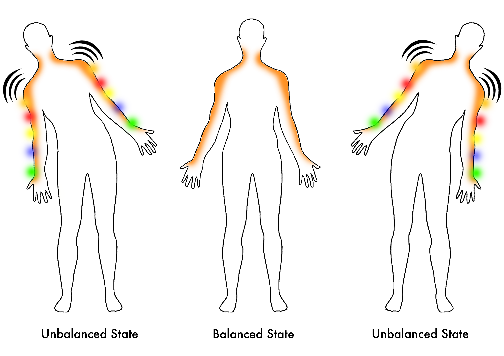


Limitation & Future Iteration
My initial idea was to have each side of the tilt light up differently whenever a person loses balance towards it, however, I was not able to achieve this as I realized that the tilt sensor actually only has two states: true or false. I was searching for something that would allow me to indicate the tilt as an angle or as some sort of measurement and accordingly map something to it, such as the different lights and the pitch of the buzzer to it. For this, I think an inclinometer would have been a better choice and would have allowed me to explore more possibilities and dissect the process further.
Use Scenario
Providing a context such as an anti-gravity room to my design, I think, makes the experience way more understandable, relatable and would even lead to greater empathy.
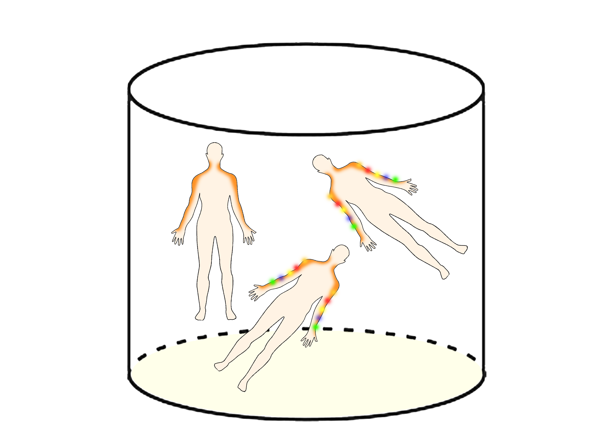
Reference
“Comb Jelly.” Giant Green Anemone, Rocky Shores, Invertebrates, Anthopleura Xanthogrammica at the Monterey Bay Aquarium, www.montereybayaquarium.org/animal-guide/invertebrates/comb-jelly.
Helm, Rebecca. “Jellyfish Born in Space Aren't Happy on Earth.” The Conversation, The Conversation, 11 Feb. 2019, theconversation.com/jellyfish-born-in-space-arent-happy-on-earth-19177.
“Jellyfish and Comb Jellies.” Ocean Portal | Smithsonian, Smithsonian's National Museum of Natural History, 18 Dec. 2018, ocean.si.edu/ocean-life/invertebrates/jellyfish-and-comb-jellies.
Spangenberg, D B, et al. “Graviceptor Development in Jellyfish Ephyrae in Space and on Earth.” Current Neurology and Neuroscience Reports., U.S. National Library of Medicine, www.ncbi.nlm.nih.gov/pubmed/11537934.